정보처리산업기사 (2005-05-29 기출문제)
1과목: 데이터 베이스
1. 내장 SQL문의 설명 중 틀린 것은?
- 내장 SQL 문장 끝은 어떠한 호스트 언어일지라도 반드시 세미콜론(;)으로 종료해야 한다.
- 내장 SQL 문장은 호스트언어의 실행 문장이 나타날 수 있는 곳이면 어디서나 사용 가능하다.
- 내장 SQL 문장은 일반 대화식 SQL 문장에 EXEC SQL을 추가한다.
- 내장 SQL 문장은 호스트 변수를 포함할 수 있다.
(정답률: 55%)

2. 시스템 자신이 필요로 하는 여러 가지 객체에 관한 정보를 포함하고 있는 시스템 데이터베이스로서, 포함하고 있는 객체로는 테이블, 데이터베이스, 뷰, 접근권한 등이 있는 것은?
- 스키마(schema)
- 시스템카탈로그(system catalog)
- 관계(relation)
- 도메인(domain)
(정답률: 62%)
3. 스키마, 도메인, 테이블, 뷰, 인덱스의 제거시 사용되는 SQL 정의어는?
- CREATE 문
- DROP 문
- SELECT 문
- CLOSE 문
(정답률: 92%)
4. 비선형 자료구조에 해당하는 것은?
- 리스트
- 스택
- 큐
- 그래프
(정답률: 87%)
5. 관계 데이터 모델에서 관계(relation)의 특성이 아닌 것은?
- 한 릴레이션에 속하는 모든 튜플은 유일성을 가진다.
- 각 속성은 릴레이션 내에서 유일한 이름을 가지며, 속성의 순서는 큰 의미가 없다.
- 릴레이션에서 튜플의 순서는 존재하지 않는다.
- 한 릴레이션에서 나타난 속성 값은 논리적으로 분해 가능한 값이어야 한다.
(정답률: 76%)
6. 다음의 설명과 관련된 용어는?
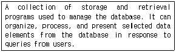
- DBMS
- Transaction
- Schema
- Domain
(정답률: 71%)
7. 데이터베이스 설계단계 중 목표 DBMS DDL로 스키마를 작성하여 데이터베이스에 등록하고 응용 프로그램을 위한 트랜잭션을 작성하는 단계는?
- 논리적 설계
- 물리적 설계
- 구현
- 운영
(정답률: 30%)
8. 정렬 기법 중 레코드의 키 값을 분석하여 같은 수 또는 같은 문자끼리 그 순서에 맞는 버켓에 분배하였다가 버켓의 순서대로 레코드를 꺼내어 정렬하는 기법은?
- 퀵(quick) 정렬
- 버블(bubble) 정렬
- 기수(radix) 정렬
- 합병(merge) 정렬
(정답률: 50%)
9. 스택(stack)의 사용과 거리가 먼 것은?
- 부프로그램(sub program) 호출의 복귀 주소 저장
- 산술식 표현
- 운영체제의 작업 스케줄링
- 인터럽트 처리
(정답률: 67%)
10. DBMS의 필수기능 중 데이터베이스 제어기능에 대한 설명으로 옳지 않은 것은?
- 데이터의 무결성이 파괴되지 않도록 해야 한다.
- 데이터의 보안을 유지하고 권한을 검사할 수 있어야 한다.
- 데이터베이스와 처리결과가 항상 정확성을 유지할 수 있도록 병행 제어를 할 수 있어야 한다.
- 데이터의 논리적 구조와 물리적 구조 사이에 변환이 가능하도록 두 구조 사이의 사상(mapping)을 명세하여야 한다.
(정답률: 62%)
11. 관계 데이터베이스의 정규화에 대한 설명이다. 괄호 안에 알맞은 것은?
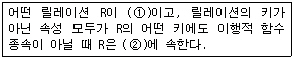
- ① 1NF ② 2NF
- ① 1NF ② 3NF
- ① 2NF ② 3NF
- ① 2NF ② 4NF
(정답률: 61%)
12. 어떤 릴레이션 R에서 X와 Y를 각각 R의 애트리뷰트 집합의 부분집합이라고 할 경우, 애트리뷰트 X의 값 각각에 대하여 시간에 관계없이 항상 애트리뷰트 Y의 값이 오직 하나만 연관되어 있을 때 Y는 X에 함수 종속이라 한다. 다음 표기 방법 중 이러한 성질을 잘 표현한 것은?
- X → Y
- Y → X
- X ⊂ Y
- Y ⊂ X
(정답률: 54%)
13. 주어진 모든 키 값들에서 그 키를 구성하는 자릿수들의 분포를 조사하여 비교적 고른 분포를 보이는 자릿수들을 필요한 만큼 택하는 방법을 취하는 해싱함수 기법은?
- 제산방법(Division method)
- 중첩방법(Folding method)
- 기수 변환법(Radix conversion method)
- 계수 분석방법(Digit analysis method)
(정답률: 37%)
14. SQL에서 검색을 위한 조건문을 기술하는데 사용되는 구문은?
- select
- where
- if
- when
(정답률: 50%)
15. 개체-관계 모델(E-R)에서 개체 간 관계타입을 나타낼 때 사용하는 기호는?
- 삼각형
- 마름모
- 타원
- 레이블
(정답률: 81%)
16. Fill in the properly word for blank.
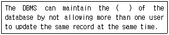
- security
- backup
- integrity
- recovery
(정답률: 51%)
17. 3단계 데이터베이스 구조에서 모든 응용시스템들이나 사용자들이 필요로 하는 데이터를 통합한 조직 전체의 데이터베이스를 정의한 스키마는?
- 외부 스키마
- 조직 스키마
- 내부 스키마
- 개념 스키마
(정답률: 60%)
18. 입력(insertion) 작업은 리스트의 한쪽 끝에서 출력(deletion) 작업은 다른 쪽 끝에서 수행되며 선입선출 구조를 갖는 자료구조는?
- 스택
- 큐
- 트리
- 그래프
(정답률: 81%)
19. 관계 데이터 모델에서 하나의 애트리뷰트(attribute)가 취할 수 있는 모든 원자 값들의 집합을 무엇이라고 하는가?
- 도메인
- 스키마
- 튜플
- 엔티티
(정답률: 65%)
20. 다음과 같은 중위식(infix)을 후위식(postfix)으로 올바르게 표현한 것은?
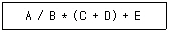
- + * / A B + C D E
- C D + A B / * E +
- / * + + A B C D E
- A B / C D + * E +
(정답률: 74%)
2과목: 전자 계산기 구조
21. 중앙처리장치가 무엇을 하고 있는가를 나타내는 것으로서 기억장치의 사이클을 단위로 하여 해당 사이클 동안에 무엇을 위해 기억장치를 접근하는가를 나타내 주는 것은?
- 메이저 상태(major state)
- 마이너 상태(minor state)
- 홀드 상태(hold state)
- 대기 상태(ready state)
(정답률: 64%)
22. 각 비트(bit)를 전하(charge)의 형태로 저장하며, 주기적으로 재충전을 필요로 하는 기억장치는?
- Static RAM
- Dynamic RAM
- CMOS RAM
- TTL RAM
(정답률: 62%)
23. 메인 메모리의 용량이 1024K×24bit 일 때 MAR과 MBR 길이는 각각 몇 비트인가?
- MAR=20, MBR=20
- MAR=20, MBR=24
- MAR=24, MBR=20
- MAR=24, MBR=24
(정답률: 61%)
24. 논리 연산 만으로 짝지어진 것은?
- MOVE, AND, COMPLEMENT
- ROTATE, ADD, SHiFT
- MOVE, EXCLUSiVE OR, SUBTRACT
- MULTiPLY, AND, DiViDE
(정답률: 53%)
25. 인터럽트 발생시에 반드시 보존되어야 하는 레지스터는?
- MAR
- Stack
- PC
- MBR
(정답률: 62%)
26. EBCDIC의 비트 구성에서 존 비트(zone bit)는 몇 비트로 구성되는가?
- 1비트
- 3비트
- 4비트
- 6비트
(정답률: 61%)
27. 다음은 RS 플립플롭의 여기표(Excitation Table)이다. 옳지 않은 것은? 단, X는 무관 조건(Don't care 조건)임.(문제오류에 의해 모든 항목이 답안입니다.위 에서 R과 S의 위치를 S와 R로 바꾸어야 답안이 2번입니다. 여기서는 1번을 정답 처리 합니다)
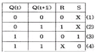
- (1)
- (2)
- (3)
- (4)
(정답률: 73%)
28. 기억장치에서 사이클(cycle) 시간과 접근(access) 시간의 관계가 옳은 것은?
- 사이클 시간 ≥ 접근 시간
- 사이클 시간 = 접근 시간
- 사이클 시간 ≤ 접근 시간
- 사이클 시간 ≠ 접근 시간
(정답률: 66%)
29. 중앙연산처리장치에서 마이크로 동작이 순서적으로 일어나게 하려면 무엇이 필요한가?
- 멀티플렉서
- 디코더
- 제어신호
- 레지스터
(정답률: 67%)
30. 인터럽트를 발생하는 장치들을 직렬로 연결하는 하드웨어적인 우선순위 제어 방식은?
- interface
- daisy chain
- polling
- DMA
(정답률: 64%)
31.
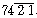
코드 표현에 의한 십진수 6의 값은?- 0110
- 1100
- 1001
- 1011
(정답률: 47%)
32. 입출력장치와 주기억장치를 연결하는 중개 역할을 담당하는 부분은?
- 버스(Bus)
- 버퍼(Buffer)
- 채널(Channel)
- 콘솔(Console)
(정답률: 68%)
33. 캐시 메모리에서 사용하지 않는 매핑(mapping) 방법은?
- direct mapping
- database mapping
- associative mapping
- set-associative mapping
(정답률: 54%)
34. 고정 소수점(Fixed Point Number) 표현 방식이 아닌 것은?
- 1의 보수에 의한 표현
- 2의 보수에 의한 표현
- 9의 보수에 의한 표현
- 부호와 절대값에 의한 표현
(정답률: 64%)
35. FLOATING POINT NUMBER에서 저장 비트가 필요 없는 것은?
- 부호
- 지수
- 소수점
- 소수(가수)
(정답률: 64%)
36. 다음의 마이크로 오퍼레이션은 무엇을 수행하는가?
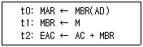
- AND 명령
- JMP 명령
- ADD 명령
- BSA 명령
(정답률: 44%)
37. 기억된 정보의 일부분을 이용하여 원하는 정보가 기억된 위치를 알아낸 후 그 위치에서 나머지 정보에 접근하는 기억장치를 무엇이라 하는가?
- Cache memory
- Main memory
- Virtual memory
- Associative memory
(정답률: 53%)
38. 연산의 종류를 unary 연산과 binary 연산으로 구별할 때 binary 연산을 하는 연산자가 아닌 것은?
- Complement
- OR
- AND
- Exclusive OR
(정답률: 80%)
39. 다음 논리 회로를 한 개의 게이트로 표현하였을 때 옳은 것은?
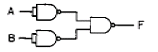
- AND 게이트
- OR 게이트
- NAND 게이트
- NOR 게이트
(정답률: 40%)
40. 다음 설명 중 옳지 않은 것은?
- 인터럽트가 발생하면 중앙처리장치의 모든 기능은 정지된다.
- 사이클 스틸의 발생시 중앙처리장치의 상태 보존은 필요없다.
- 사이클 스틸은 DMA 인터페이스에 의해서 이루어진다.
- 인터럽트 발생시 중앙처리장치의 상태 보존은 필요하다
(정답률: 38%)
3과목: 시스템분석설계
41. 입력전표를 설계할 때, 고려사항이 아닌 것은?
- 기입 항목 수는 최소화한다.
- 원시전표의 크기는 표준화하고, 전표의 지질을 규격화하여 관리가 용이하도록 한다.
- 기입에 혼란을 가져올 수 있는 내용은 기입의 용이성 측면에서 제거한다.
- 원시전표를 읽는 순서와 입력되는 순서는 일치하도록 한다.
(정답률: 40%)
42. 코드의 기입 과정에서 원래는 1996으로 기입되어야 하는데 오기를 하여 1969로 표기되었을 경우, 어느 Error에 해당 하는가?
- Transcription Error
- Transposition Error
- Double Transposition Error
- Random Error
(정답률: 64%)
43. 코드 설계 후 설계의 기본사항을 바꾸지 않고 코드부여 대상의 신규발생, 변경, 폐지에 대응할 수 있는 코드의 성질을 의미하는 것은?
- 확장성
- 명확성
- 용이성
- 표의성
(정답률: 60%)
44. 코드화 대상 항목을 어떤 일정한 배열로 일련번호를 배당하는 코드로서 항목 수가 적고 장래에 다시 작성하는 일이 없는 항목에 적합한 코드의 종류는?
- sequence code
- block code
- decimal code
- significant digit code
(정답률: 58%)
45. 시스템 분석가로서 훌륭한 분석을 하기 위한 기본 사항으로 거리가 먼 것은?
- 분석가는 창조성이 있어야 한다.
- 분석가는 시간배정과 계획 등을 빠른 시간 내에 파악할 수 있어야 한다.
- 분석가는 컴퓨터 장치와 소프트웨어에 대한 지식을 가져야 한다.
- 분석가는 기계 중심적이어야 한다.
(정답률: 73%)
46. 입력 정보의 매체화에 대한 설계 사항과 거리가 먼 것은?
- 입력 정보의 형태를 선택한다.
- 입력 정보의 투입 매체와 입력 장치를 선택한다.
- 입력 정보의 매체화 기기를 결정한다.
- 입력 정보의 명칭을 결정한다.
(정답률: 67%)
47. 다음 시스템의 평균 고장 간격(MTBF)은 얼마인가?.(오류 신고가 접수된 문제입니다. 반드시 정답과 해설을 확인하시기 바랍니다.)
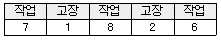
- 1.5
- 3
- 7
- 21
(정답률: 56%)
48. 프로세스 설계시 유의사항이 아닌 것은?
- 프로세스 전개의 사상을 통일할 것
- 오퍼레이터의 개입을 많게 할 것
- 예외 사항의 처리 방법에 유의할 것
- 하드웨어의 기기 구성 및 처리 능력을 고려할 것
(정답률: 66%)
49. 코드설계 순서로 옳은 것은?
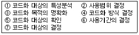
- ⑦→③→②→⑤→⑥→①→④
- ⑦→③→⑤→②→⑥→①→④
- ③→②→⑦→⑤→⑥→①→④
- ⑦→①→②→⑤→⑥→③→④
(정답률: 56%)
50. 시스템에 대한 문서화의 효과로 볼 수 없는 것은?
- 시스템 개발 후 유지 보수가 용이하다.
- 시스템 개발 중 추가 변경에 따른 혼란을 방지한다.
- 시스템 개발 절차를 표준화하여 효율적 작업이 이루어 진다.
- 책임 소재가 명확해 진다.
(정답률: 77%)
51. HIPO의 구성 요소로 옳게 짝지어진 것은?
- Input, Control, Process
- Input, Control, Storage
- Input, Process, Output
- Storage, Process, Output
(정답률: 54%)
52. 파일편성 설계 중 랜덤편성 방법에 대한 설명으로 옳지 않은 것은?
- 어떤 레코드라도 평균접근 시간 내에 검색이 가능하다.
- 운영체제에 따라서는 키-주소변환을 자동으로 하는 것도 있다.
- 키-주소변환방법에 의한 충돌 발생이 없으므로 이를 위 한 기억 공간 확보가 필요 없다.
- 레코드의 키 값으로부터 레코드가 기억되어 있는 기억장소의 주소를 직접 계산함으로써 원하는 레코드를 직접 접근할 수 있다.
(정답률: 78%)
53. 시스템 명세, 설계 결과, 프로그램 코드 등을 각각 여러 사람이 검토하게 함으로써 그 안에 포함되어 있는 오류를 조기에 발견하고자 하는 활동은?
- 인스펙션(Inspection)
- 워크스루(Work-Through)
- 디버깅(Debugging)
- 검사(Testing)
(정답률: 31%)
54. 입력 정보의 매체화를 그 데이터가 발생한 장소에서 하고 그 입력 매체를 주기적으로 수집하여 컴퓨터에 입력시키는 방식을 사용하는 입력의 형식은?
- 분산 매체화 시스템
- 턴 어라운드 시스템
- 직접 입력 시스템
- 집중 매체화 시스템
(정답률: 31%)
55. 컴퓨터 처리 단계에서의 체크는 컴퓨터 입력 단계 체크와 계산 처리 단계 체크가 있다. 다음 중 계산 처리 단계에서의 체크 종류가 아닌 것은?
- 마스터 파일을 변경하는 경우 트랜잭션 정보에 동일한 레코드가 여러 개 있을 때 그 정보를 잘못으로 체크한다.
- 마스터 파일과 트랜잭션 파일을 조합하는 경우에 키 항목이 일치하는지의 여부를 체크한다.
- 숫자 데이터 항목의 내용에 숫자 이외의 다른 문자가 입력되었는지를 체크한다.
- 연산 과정에서 계산 결과가 규정된 자리 수나 한계를 초과하는지를 검사한다.
(정답률: 34%)
56. 시스템의 5대 기본 구성요소의 설명 중 잘못된 것은?
- 입력 기능은 처리 방법, 제어 조건, 처리할 데이터를 시스템에 입력하는 기능이다.
- 처리 기능은 결과를 산출하기 위해 입력 자료를 조건에 맞게 처리하는 기능이다.
- 제어 기능은 각 과정의 제 기능이 올바로 수행되는지를 통제하거나 관리하는 기능이다.
- 유지보수 기능은 시스템의 전반적인 기능들을 유지보수 하는 기능이다.
(정답률: 43%)
57. 자료흐름도에서 기호를 사용하여 분석대상 업무를 문서화 한다. 다음 기호는 무엇을 나타내는가?
- 처리
- 자료 흐름
- 자료 저장소
- 단말
(정답률: 49%)
58. 마스터 파일을 갱신하거나 수정하기 위해 사용되는 파일은?
- 보고서 파일
- 요약 파일
- 히스토리 파일
- 트랜잭션 파일
(정답률: 68%)
59. 객체지향의 기본 요소 중에서 유사한 객체를 묶어 하나의 공통된 특성을 표현하는 요소는?
- Class
- Inheritance
- Instance
- Message
(정답률: 77%)
60. 마스터 파일 안의 정보를 트랜잭션 파일에 의해 추가, 삭제, 교환하고 그 새로운 내용의 마스터 파일을 작성하는 작업은?
- 갱신(update)
- 병합(merge)
- 변환(conversion)
- 삽입(insert)
(정답률: 76%)
4과목: 운영체제
61. 클라이언트/서버(Client/Server) 시스템의 설명으로 적합하지 않은 것은?
- 사용자 중심의 개별적인 클라이언트 운영 환경이 가능하다.
- 시스템 확장이 용이하고 유연성이 있다.
- 많은 자원을 공유할 수 있다.
- 폐쇄적인 시스템으로 하드웨어와 소프트웨어 선택에 제약이 있다.
(정답률: 75%)
62. 사용자의 신원을 운영체제가 확인하는 절차를 통해 불법 침입자로 부터 시스템을 보호하는 보안은?
- 외부 보안
- 운용 보안
- 사용자 인터페이스 보안
- 내부 보안
(정답률: 61%)
63. 데이터 암호화 시스템 중, 암호화키와 해독키가 따로 존재하여 암호화 키는 공용키로 공개되어 있고 해독 키는 개인키로 비밀이 보장되어 있는 방식은?
- 비밀 번호(password)
- DES(Data Encryption Standards)
- 공개 키 시스템(public key system)
- 디지털 서명(digital signature)
(정답률: 66%)
64. 프로세스 상태전이에 관한 설명이다. 옳지 않은 것은?
- 준비리스트에 있는 프로세스와 보류상태에 있는 프로세스들은 각기 우선순위가 주어진다.
- 준비리스트에 있는 프로세스는 일정시간이 지나면 실행 상태로 전이된다.
- 준비리스트의 맨 앞에 있던 프로세스가 cpu를 취하게 되는 것을 디스패칭이라 한다.
- 보류리스트에 있는 리스트는 프로세스 자의가 아닌 외적 조건에 의해 프로세스 전이가 일어난다.
(정답률: 20%)
65. 구역성(locality)에 대한 설명으로 옳지 않은 것은?
- 시간구역성의 예로는 순환, 부프로그램, 스택 등이 있다.
- 구역성에는 시간구역성과 공간구역성이 있다.
- 어떤 프로세스를 효과적으로 실행하기 위해 주기억장치에 유지되어야 하는 페이지들의 집합이다.
- 프로세서들은 기억장치내의 정보를 균일하게 엑세스하는 것이 아니라, 어느 한순간에 특정 부분을 집중적으로 참조한다.
(정답률: 55%)
66. 기억장치의 관리 전략 중 배치(Replacement)전략의 설명으로 옳은 것은?(문제 오류입니다. 위 에서 배치(Placement)로 출제되면 답안은 “다”재배치(Replacement)로 출제되면 답안은 “나”입니다. 여기서는 1번을 정답 처리 합니다.)
- 프로그램과 데이터의 위치를 이동시키는 전략
- 주기억장치 내의 빈 공간 확보를 위해 제거할 프로그램과 데이터를 선택하는 전략
- 프로그램과 데이터에 대한 주기억장치 내의 위치를 정하는 전략
- 프로그램과 데이터를 주기억장치로 가져오는 시기를 결정하는 전략
(정답률: 71%)
67. 하나의 프로세스가 공유 자원의 사용을 완료할 때까지 다른 프로세스의 공유 자원에 대한 접근을 금지하도록 하는 제어 기법을 의미하는 것은?
- 세그먼트(segment)
- 모니터(monitor)
- 임계 영역(critical section)
- 상호 배제(mutual exclusion)
(정답률: 59%)
68. 페이징 시스템의 페이지 관리 전략 중 "근래에 쓰이지 않은 페이지들은 가까운 미래에도 쓰이지 않을 가능이 높다." 라는 이론에 근거한 교체 전략은?
- LFU(Least Frequently Used) 페이지 교체
- FIFO 페이지 교체
- NUR(Not Used Recently) 페이지 교체
- 무작위 페이지 교체(random page replacement)
(정답률: 56%)
69. 선점형(preemption) 스케쥴링에 해당하는 것은?
- FIFO
- RR(Round Robin)
- SJF
- HRN
(정답률: 57%)
70. UNIX 시스템에서 파일의 권한 모드 설정에 관한 명령어는?
- chgrp
- chmod
- chown
- cpio
(정답률: 75%)
71. SJF(Shortest Job First) 스케줄링에서 작업 도착 시간과 CPU 사용시간은 아래 표와 같다. 모든 작업들의 평균 대기시간은 얼마인가?
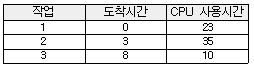
- 15
- 17
- 24
- 25
(정답률: 40%)
72. 다음 표는 고정 분할에서의 기억 장치단편화 현상을 보이고 있다. 내부단편화(Internal Fragmentation)는 얼마인가?
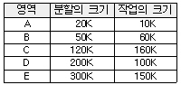
- 480k
- 430k
- 260k
- 170k
(정답률: 60%)
73. UNIX 파일 시스템의 구조를 설명하는 내용으로 옳지 않은 것은?
- i-node 테이블 : 파일에 대한 크기, 디스크 주소, 파일유형, 사용허가권, 생성날짜 등이 기록된다.
- 실린더 그룹 블록 : 실제 데이터가 저장되는 공간이다.
- 수퍼블록 : 파일 시스템의 크기, i-node 테이블 크기, free 블록리스트 등 파일시스템을 관리하는데 필수적인 정보가 저장된다.
- 부트블록 - 부트스트랩에 필요한 파일들이 존재하며 루트영역 외에는 해당되지 않는다.
(정답률: 53%)
74. 파일 시스템의 기능에 대한 설명으로 옳지 않은 것은?
- 사용자가 파일을 생성, 수정, 제거할 수 있도록 한다.
- 적절한 제어방식을 통해 다른 사람의 파일을 공동으로 사용할 수 있도록 한다.
- 사용자가 이용하기 편리하도록 사용자에게 익숙한 인터페이스를 제공해야 한다.
- 정보의 암호화와 해독에 대한 기능은 제공하지 않는다.
(정답률: 69%)
75. 분산 시스템의 설명으로 옳지 않은 것은?
- 확장성의 용이
- 보안성 향상
- 자원 공유
- 응답 시간 예측 가능
(정답률: 70%)
76. 운영체제에 관한 설명으로 거리가 먼 것은?
- 운영체제는 컴퓨터를 운영하기 위한 제어 루틴으로 구성된다.
- 운영체제 이외의 프로그램들은 운영체제가 제공한 기능에 의존하여 컴퓨터 시스템의 자원에 접근한다.
- 운영체제는 일종의 시스템 명령어이므로 사용자들이 운영체제와 직접 상호 작용할 수 없다.
- 운영체제는 컴퓨터 하드웨어와 사용자 사이의 인터페이스 역할을 한다.
(정답률: 71%)
77. 프로세스 제어 블록(PCB)의 내용이 아닌 것은?
- 프로세스 식별번호
- 기억장치 관리 정보
- 우선순위 정보
- 초기 값 정보
(정답률: 48%)
78. RR(Round-Robin) 스케줄링 기법에서 시간 할당량이 대부분의 작업을 완료할 만큼 길다면, 다음의 어느 기법과 비슷한 결과를 얻게 되는가?
- FIFO
- SJF
- HRN
- SRT
(정답률: 64%)
79. 모니터에 대한 설명으로 옳지 않은 것은?
- 한 순간에 둘 이상의 프로세스가 모니터에 들어갈 수 있다.
- 모니터의 경계에서 상호 배제가 시행된다.
- 모니터 외부의 프로세스는 모니터 내부 데이터를 접근할 수 없다.
- 특정 공유자원이나 한 그룹의 공유자원을 할당하는데 필요한 데이터 및 프로시저를 포함하는 병행성 구조이다.
(정답률: 58%)
80. 다음은 디스크 할당기법으로서 연속할당 기법에 관하여 기술한 것이다. 잘못된 것은?
- 외부단편이 발생한다.
- 논리적으로 연속된 레코드들이 물리적으로 인접하여 저장되므로 액세스 시간이 증가된다.
- 파일의 디렉토리를 구현하기가 수월하다.
- 새로운 파일을 생성할 때 그 파일크기보다 큰 연속된 기억 공간이 없으면 그 파일을 생성할 수 없다.
(정답률: 36%)
5과목: 정보통신개론
81. 정보통신시스템의 통신회선 종단에 위치한 신호변환장치 중 디지털 전송로에서 단극성 신호를 쌍극성 신호로 변환이 가능한 장치는?
- 지능 모뎀
- 음향결합기
- 코덱
- 디지털 서비스 유니트
(정답률: 43%)
82. 다음 중 브로드밴드의 변조방식이 아닌 것은 ?
- ASK
- QAM
- FSK
- PCM
(정답률: 58%)
83. 다음 중 발신가입자로부터 수신자까지의 모든 전송, 교환과정이 디지털방식으로 처리되며, 음성과 비음성, 영상 등의 서비스를 종합적으로 처리하는 통신망은?
- PSDN
- VAN
- ISDN
- PSTN
(정답률: 60%)
84. LAN의 특성에 대한 설명 중 틀린 것은 ?
- 음성, 데이터, 화상정보를 전송할 수 있다.
- LAN 프로토콜은 OSI 참조모델의 상위층에 해당된다.
- 전송방식으로 베이스밴드와 브로드밴드 방식이 있다.
- 광케이블 및 동축케이블도 사용 가능하다.
(정답률: 67%)
85. 전진오류수정(Forward Error Correction)의 특징으로 잘못된 것은 ?
- 역채널이 필요하다.
- 연속적인 데이터의 흐름이 가능하다.
- ARQ에 비해 기기와 코딩이 더 복잡하다.
- 잉여비트들이 데이터시스템 효율의 개선을 저해한다.
(정답률: 31%)
86. ISDN 채널의 종류와 전송속도의 관계가 잘못된 것은 ?
- B채널 : 16[kbps]
- D채널 : 64/16[kbps]
- Ho채널 : 384[kbps]
- H11채널 : 1536[Kbps]
(정답률: 40%)
87. 다음 중 데이터 통신에 의한 실시간 처리 형태로 가장 적합한 것은?
- 오프라인 처리
- 온라인 배치 처리
- 온라인 리얼타임 처리
- 오프라인 리얼타임 처리
(정답률: 74%)
88. 정보에 대하여 가장 적합하게 설명한 것은 ?
- 인간 또는 기계가 감지할 수 있도록 숫자, 문자, 기호 등으로 형식화한 것이다.
- 멀리 떨어져 있는 입·출력장치와 컴퓨터가 서로 주고받는 것이다.
- 여러 가지 데이터를 처리 후, 특정 목적 수행을 위하여 체계화한 것이다.
- 기계와 기계 사이에 전달되는 일체의 기호이다.
(정답률: 59%)
89. 데이터 전송시 에러검출용으로 사용되는 것은 ?
- 플래그(Flag) 비트
- 패리티 체크(Parity Check) 비트
- 시프트(Shift) 비트
- 시작 및 정지비트
(정답률: 71%)
90. OSI 참조 모델 계층 가운데 암호화, 데이터압축, 코드변환 등의 기능을 수행하는 계층은?
- 응용계층
- 표현계층
- 세션계층
- 네트워크계층
(정답률: 54%)
91. 다음 중 반송파의 진폭과 위상을 상호 변환하여 신호를 얻는 변조방식은?
- PSK
- ASK
- QAM
- FSK
(정답률: 57%)
92. TV 신호의 주사선 틈을 이용해서 문자나 도형정보를 방송하고 시청자들이 단말기, 어댑터 등의 장치를 이용해서 TV화면으로 그 내용을 시청할 수 있도록 하는 서비스는?
- 텔리텍스트
- 비디오텍스
- CATV
- HDTV
(정답률: 35%)
93. 사용자의 데이터 단말기(DTE)가 패킷 교환 네트워크에 접속하고자 할 때 따르는 규정을 정의한 프로토콜은?
- X.21
- X.25
- HDLC
- RS-232C
(정답률: 51%)
94. 다음 중 통신제어장치의 역할은?
- 데이터 전송의 특성을 변조시킨다.
- 통신회선을 통하여 송·수신되는 과정을 제어하고 감시한다.
- 수신신호에서 아이 패턴을 복조한다.
- 통신회선을 거쳐 온 전송신호를 데이터로 변환시킨다.
(정답률: 60%)
95. 다음 중 정보통신 관련 국제적인 권고규정을 제정하는 국제전기통신연합의 약자는 ?
- NBS
- EIA
- ITU
- ITT
(정답률: 56%)
96. 베이스밴드 전송방식에 해당되지 않는 것은 ?
- 단류 NRZ 방식
- 복류 NRZ 방식
- Bipolar 방식
- DSB 방식
(정답률: 44%)
97. 보오(Baud)속도가 3200 보오이며, 트리비트(Tri-bit)를 사용하는 경우 몇 bps가 되는가?
- 1200
- 2400
- 4800
- 9600
(정답률: 74%)
98. 동기식 전송방식 중 비트지향성(bit oriented) 방식의 프로토콜이 아닌 것은?
- HDLC
- ADCCP
- BSC
- SDLC
(정답률: 48%)
99. 다음 중 서로 관련성이 먼 것은 ?
- ENIAC - 최초의 컴퓨터
- SAGE - 상업용 위성통신 시스템
- SABRE - 항공기 좌석예약 응용
- ALOHANET - 최초의 패킷 무선망
(정답률: 60%)
100. 데이터교환방식 중에서 128[byte] 혹은 256[byte] 등 일정 길이의 전송단위로 정보를 나누어 전송하는 것은 ?
- 회선교환
- 메시지교환
- 패킷교환
- 축적교환
(정답률: 71%)
정답인 "내장 SQL 문장 끝은 어떠한 호스트 언어일지라도 반드시 세미콜론(;)으로 종료해야 한다."는 내장 SQL 문장의 문법적인 규칙 중 하나입니다. 세미콜론을 사용하지 않으면 문장이 끝나지 않았다고 인식되어 오류가 발생할 수 있습니다.
내장 SQL 문장은 일반 대화식 SQL 문장에 EXEC SQL을 추가하여 사용하며, 호스트 변수를 포함할 수 있습니다.